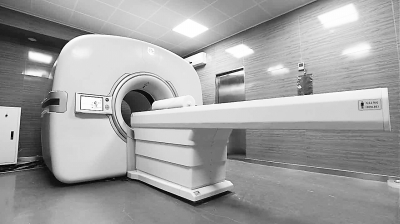

▲Radiation dosimeter used by Hu Yi.

Human clinical PET equipment
On February 24th, a report titled 'Xinhua News Agency Reporter Takes Great Risks to Test Radiation Levels in Fukushima: Is Japan Still Safe for Tourism?' went viral on social media. As a result, the Xinhua reporter Hu Yi, who ventured into the restricted area of the Fukushima Daiichi Nuclear Power Plant despite turning off his alarm, became an internet sensation. Despite disabling the alarm, Hu's personal radiation dosimeter still registered high levels of radiation, causing it to vibrate violently in his hand—a scene that left a deep impression on many.
Xie Qingguo is a professor at the School of Life Sciences at Huazhong University of Science and Technology and a researcher at Wuhan National Laboratory for Optoelectronics. He is also the inventor of 'Digital PET'. Xie explained that this personal radiation dosimeter, based on his invention of full digital PET technology, can accurately detect and display radiation doses. The device achieves higher sensitivity than traditional detectors in a smaller size, capable of detecting weak natural environmental radiation changes and providing real-time alarms for excessive levels of radiation.
Team graduate students volunteer to assist the reporter with radiation detection
How did Xinhua News Agency reporters get their hands on these radiation detection devices? It turns out that March 11th marked six years since the Fukushima earthquake, and Hu Yuexuan, a master's student focused on radiation detection research at Xie Qingguo’s team, learned that Xinhua would send reporters to Fukushima on February 19th and have them enter the nuclear leakage restricted area on the 22nd via live broadcast. Hu Yuexuan proactively contacted Xinhua and expressed his willingness to provide instruments and professional consultation services for the reporters. The reporter in Tokyo, Hu Yi, requested that Hu Yuexuan send him radiation detection equipment and offer guidance on interpreting radiation data.
On the afternoon of February 23rd, at around 3 PM, the highly anticipated live broadcast began. Hu Yuexuan closely monitored the personal dosimeter held by the reporters. The instrument showed that the radiation intensity in the restricted area outside Fukushima was still as high as 0.4 μSv/h, approximately forty times higher than Japan's natural background radiation levels (natural background radiation refers to the radiation we receive from our environment on a daily basis). Living in such an area for one year would result in cumulative radiation exposure three times higher than the international recommended annual dose.
During the live broadcast, Xie Qingguo’s team at Huazhong University of Science and Technology provided real-time data analysis: The cumulative radiation dose received by the Xinhua reporters from February 22nd to 23rd was 17.95 μSv. Hu Yuexuan believes that this radiation exposure is about twenty-seven times higher than normal background levels, and if one were to live in such an environment for a long time, their average annual cumulative dose would reach 9.8 mSv, nine times the safety limit, potentially causing significant harm to human health.
Near the nuclear power plant facilities, Xinhua reporters experienced violent vibrations from high-sensitivity radiation detectors. When it was learned that Tokyo Electric Power Company did not provide protective suits and that the front-line reporters only wore vests and regular masks, the research team expressed great concern: The three key points for radiation protection are time, distance, and shielding. In summary, the keywords are 'less exposure', 'keep away', and 'wear protective gear'. For frontline journalists, without wearing specialized protective clothing and masks, radioactive dust can easily adhere to their skin, causing radiation damage.
Hu Yuexuan stated that more dangerous than being exposed to radiation is having radioactive contaminants carried into the body through food and water. Some radioactive substances (such as cesium-137, one of the main radioactive materials from the Fukushima nuclear leak) have long half-lives and slow metabolism rates, making them extremely difficult to handle and posing significant risks to human health. Moreover, the persistence of radioactive substances is beyond imagination; for example, a small shrimp swimming near the coast of Fukushima might consume several meals of radiation-contaminated algae before being eaten by a smaller fish, which in turn could be consumed by thousands of other small fish that are then eaten by a large tuna, eventually ending up on our dinner plates. Radioactive substances accumulate through the food chain and are difficult to eliminate.
It is worth noting that this is not the first time Xie Qingguo’s team has volunteered for such significant international events. In 2013 and 2016, when North Korea conducted underground nuclear tests twice, students from Xie's team rushed to the border between China and North Korea immediately, providing real-time measured data via Weibo and WeChat platforms.
Currently, Xie Qingguo’s team has dispatched professional researchers to various locations in Japan to conduct a series of radiation detection tasks, aiming to provide scientific and technological support for studying secondary hazards from the Fukushima nuclear leak and preventing environmental and human health risks caused by nuclear radiation.
Further Reading
Application of Digital PET Technology: Full-body Examination Takes Only 5 Minutes
It is known that PET (Positron Emission Tomography) is one of today's most advanced medical imaging technologies, following ultrasound, CT, and MRI. It has become one of the best methods for clinical diagnosis and guiding cancer treatment. Due to its involvement in nuclear physics, electronics, materials science, mechanics, medicine, and other disciplines, it has high technical barriers. Currently, only three multinational companies globally can independently develop and produce PET.
Xie Qingguo’s team owns over 200 patents for full digital PET technology, with complete independent intellectual property rights. The key imaging technologies of full digital PET were appraised as internationally leading in 2013. In recent years, the team has overcome a series of challenges to convert research results into practical applications and finally produced clinical-use PET.
The first human clinical 'full digital PET' consists of over 300 full digital PET detection modules, each using advanced scintillation crystals and new photomultiplier devices. By leveraging full digital sampling and signal processing algorithms, its spatial resolution has reached 2.2 mm, nearly doubling the highest level currently available in imported equipment. This machine perfectly interprets what 'full digital' and 'precise sampling' mean.
Furthermore, with the first human clinical 'full digital PET', a whole-body examination for patients takes only five minutes, half the time required by traditional devices. It achieves both speed and accuracy in full digital PET examinations, and from a scientific perspective, the radiation dose during detection is significantly lower than that of X-rays, CT scans, or MRI. Once fully applied clinically, 'full digital PET' will greatly enhance hospitals’ capacity to serve patients and reduce the cost of PET checks.
Next, the first clinical full digital PET machine will be sent to Guangzhou Zhongshan Hospital for clinical trials in March this year. After completing a certain number of clinical trials at two domestic hospitals, the National Medical Products Administration will evaluate the trial results. If everything goes smoothly, clinical full digital PET will soon enter clinical use.